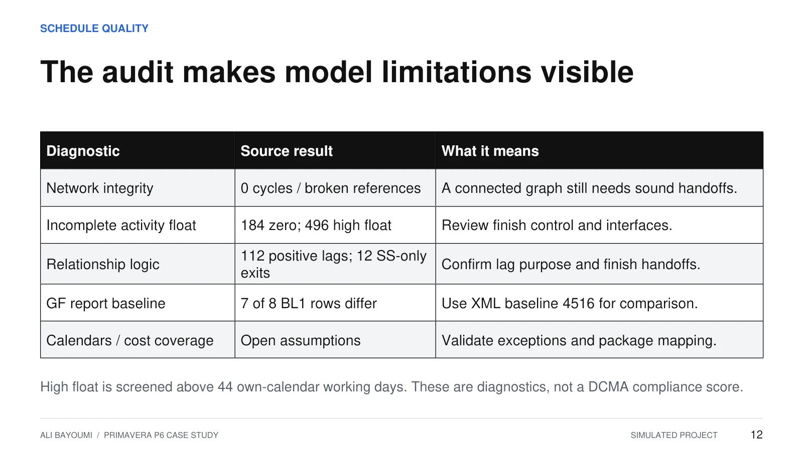

Confirm the basis
Record the data date, schedule version, baseline and calendar assumptions before comparing reports.
CASE STUDY 02 / TRAINING EXERCISE
Programme quality & progress verification
01 / THE ASSIGNMENT
Review a saved P6 programme, turn audit findings into actionable comments, and distinguish reported from verified package progress. A training companion to the building case study.
Record the data date, schedule version, baseline and calendar assumptions before comparing reports.
A diagnostic prompts an explanation; it does not by itself prove faulty logic or a delay entitlement.
State the issue, requested evidence, owner, response date and closure condition.
02 / PROGRAMME REVIEW
Saved update at 01 Apr 2027. Findings below are traceable to slides 9 and 12 of the presentation; the review actions are proposed training responses.
| ID / topic | Source finding | Review comment / requested evidence |
|---|---|---|
| C-01 / Calendar | No holiday exceptions for 2026–2028. | Confirm the agreed working and shutdown calendar. Recalculate a copy before quantifying completion impact. |
| L-01 / Logic | 112 positive lags; 12 activities with SS-only successors. | Explain the construction basis for lags and demonstrate finish logic for the flagged activities. These counts alone do not prove an error. |
| F-01 / Float | 496 incomplete activities above 44 own-calendar working days of float. | Review scope interfaces and successor completeness. This diagnostic threshold is not a DCMA compliance result. |
| B-01 / Baseline | Seven of eight original ground-floor report baseline rows differ from the embedded baseline. | Confirm the approved comparison source and regenerate the report. Use the corrected milestone comparison in slide 9. |

C-01: calendar exceptions. The existing portfolio audit found no holiday exceptions for 2026–2028. This is a query to resolve with the contractor before accepting working-time assumptions.
| Review item | Comment / required action |
|---|---|
| Potential effect | Activities could fall on dates when crews are unavailable. The completion impact has not been quantified. |
| Review comment | Submit the agreed holiday and shutdown calendar. Explain any continuous-work calendars, including curing. |
| Required response | The planner updates a copy, recalculates CPM and compares the same handover milestone. Retain the response and calculation log. |
| Training action record | Owner: contractor planner. Due: 02 Apr 2027. Status: open pending evidence. |
Source finding: existing portfolio slide 12 and its notes. The review wording and response deadline are assumed. No full P6 rerun or quantified calendar delay is claimed.
Retain the original submission. Log the contractor response, approved calendar and baseline reference. Compare the revised calculation to the same handover milestone and record any new logic or setting changes. Close the comment only when the evidence answers the query; no response or completed P6 rerun is supplied in this exercise.
03 / PROGRESS VERIFICATION
Assumed slab package: 400 m³. Reporting cut: 01 Apr 2027. Progress recognises installed and accepted concrete against the same defined scope.
| Basis | Quantity | Progress | Training evidence |
|---|---|---|---|
| Planned to date | 200 m³ | 50% | Assumed quantity plan |
| Contractor reported | 180 m³ | 45% | Assumed daily report |
| Verified in exercise | 160 m³ | 40% | Mock measurement Q-001 and inspection release IR-001 |
Verified progress is 10 percentage points below plan: a 40 m³ shortfall. A further 20 m³ reported by the contractor remains unverified.
| Log | Finding | Action / owner | Due | Status |
|---|---|---|---|---|
| D-01 | 40 m³ below plan | Site manager: submit a production recovery plan | 02 Apr 2027 | Open |
| V-01 | 20 m³ unverified | Site engineer: reconcile measurements and inspection records | 02 Apr 2027 | Open |
Q-001 and IR-001 are assumed record references, not supplied signed evidence. In practice, check location-tagged daily reports, delivery tickets, measured quantities and inspection releases against one reporting cut-off. Unverified work is not automatically rejected work.
This 40% applies only to the training slab package. Whole-project progress needs documented package weights. It does not replace the original duration-based P6 EV or prove a delay to handover.
04 / THE REVIEW CONCLUSION
The exercise leaves the calendar query open pending evidence. The assumed slab package is 10 percentage points below plan, while 20 m³ of reported work still needs verification. These are separate findings requiring separate actions.
| What this demonstrates | What remains to be established |
|---|---|
| A review comment connected to an observed schedule finding. | An agreed calendar and a native schedule recalculation before stating a time impact. |
| Quantity-based progress and an owner/action/deadline register. | Actual measurement records, acceptance evidence and the recovery proposal. |
| Consistent milestone and baseline comparisons. | Formal programme acceptance under the project’s own review procedure. |
This page uses the existing P6 case study and its training appendix. It is not a separate employment assignment.
SUPPORTING PRESENTATION
Slides 16–17 in the shared 18-slide portfolio. The PowerPoint includes speaker notes explaining the exercise and its assumptions.
GET IN TOUCH
For planning, scheduling and project controls opportunities.